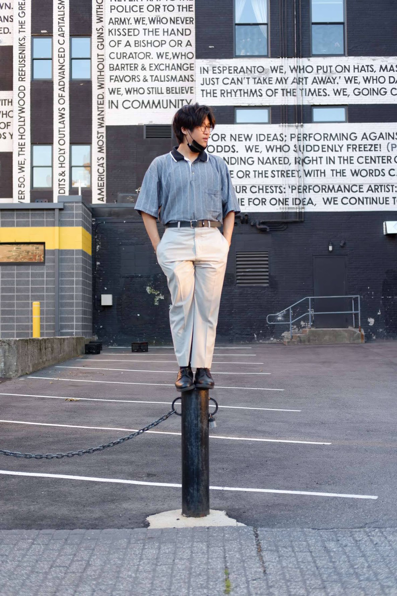

| |
|
|
My name is Alfred Su, I am currently a freshman studying Computer Science and Minor in Japanese and hopefully doing the ICSP program at the University of Rhode Island. I was born in raised in Cranston, Rhode Island.
I have many hobbies which include Video Games, Photography, Fashion and Anime. My favorite season has to be fall, I would say it is the best temperature to wear the clothing I like. It is not too hard nor too cold.
